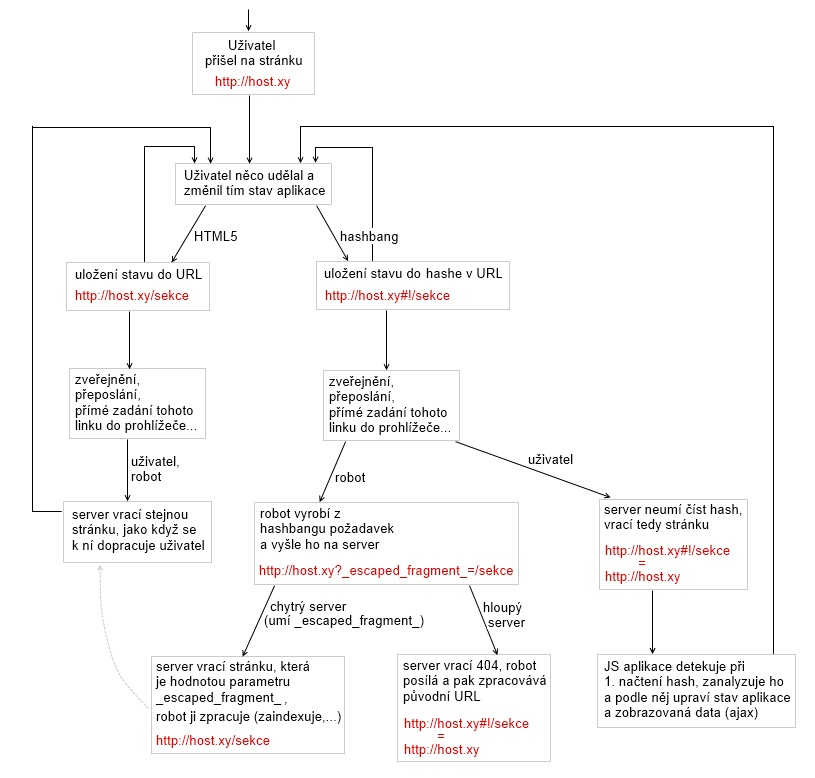

Utilita umožňuje ukládat stav aplikace do URL, v chytrých prohlížečích pomocí featury HTML5 history přímo do URL, v hloupých do hashe, resp. hashbangu (#!).
Toto demo je psáno jen pomocí html+css+js, tudíž v případě, že se URL přepisuje pomocí HTML5 history, stránka při refreshi skončí chybou 404. V praxi by toto mělo být podchyceno na serveru, který by měl na všechny vygenerované URL vracet správnou odpověď. Další věc, která by měla být ošéfována na serveru, je správná reakce na požadavek s vyplněným parametrem _escaped_fragment_. To kvůli variantě, kdy se stav aplikace zapisuje do hashbangu. Více o vztahu hashbangu a _escaped_fragment_ najdeš třeba na google developers.
Následující graf ukazuje, co se děje či mělo by dít v javascriptové aplikaci, která ukládá svůj stav do URL. Utilita JAK.History2 je podporou tohoto modelu - odstiňuje nás od samotného procesu ukládání a čtení URL a přidává signál o jakékoliv změně v URL.
Přidat do stránky soubory jak.js a JAK/util/history2.js.
Vytvořit objekt, který implementuje rozhraní JAK.History2.IProcessor.
Tyto metody si pak už ve správnou chvíli volá utilita sama. Jeden z mála případů, kdy je můžeme chtít použít sami, je např. aktualizace linků ve stránkování. Pro tento případ jsou určeny metody objektu JAK.History2: parseState, serializeState (viz bod 4.).
Nastavit parametry utility, vytvořit její instanci, vytvořit posluchač na signál "history-change" (ten vyvolává použití tlačítek zpět a vpřed v prohlížeči).
/*jsme v nejakem objektu, ktery implementuje JAK.ISignals*/
/*pouzivat html5 history? pokud ne, historie se uklada vzdy do hashe*/
JAK.History2.config.useHtml5 = true; //default=true
/*instance objektu, ktery implementuje rozhrani JAK.History2.IProcessor*/
JAK.History2.config.processor = myProcessorObject; //default=null
/*pouzivat hashbang? pokud ne, historie se u hloupych prohlizecu uklada do obycejneho hashe (#)*/
JAK.History2.config.useHashBang = true; //default=true
this._history2 = JAK.History2.getInstance(); //vytvorime/ziskame objekt history2
this.addListener('history-change', '_processHistoryChange', this._history2); //posluchac na zmenu v URL
A je to, můžeme to používat. K tomu slouží 5 veřejných metod:
Domluvit se s programátory, aby server vracel odpovídající stránky na jakoukoliv URL, která se vygeneruje pomocí HTML5 history (pokud mám nastaveno, že chci používat HTML5) a na požadavek obsahující GET parametr _escaped_fragment_ (pokud mám nastaveno, že chci používat hashbang).